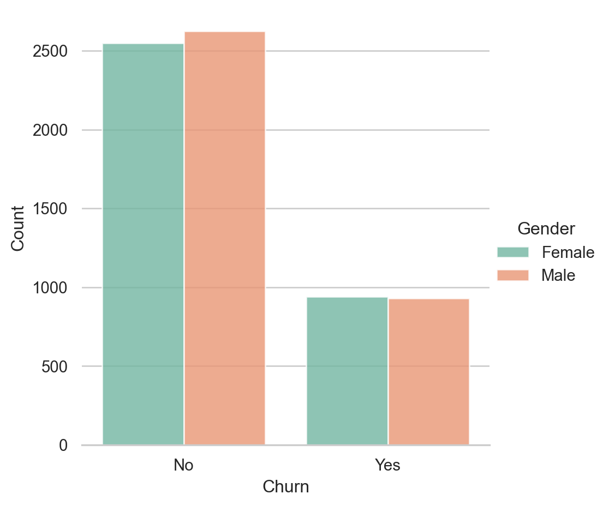
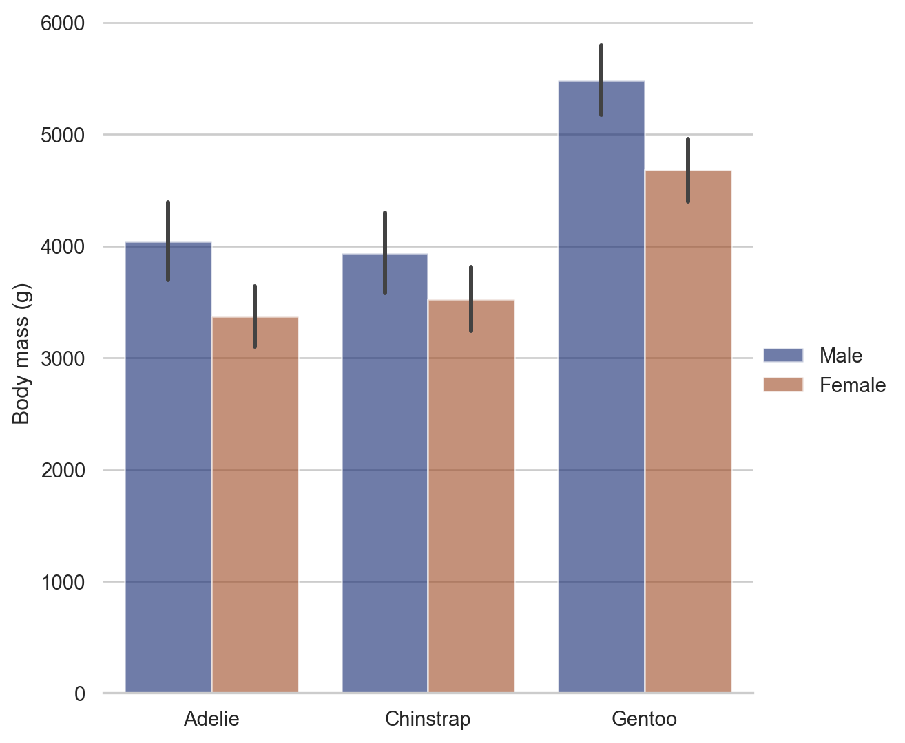
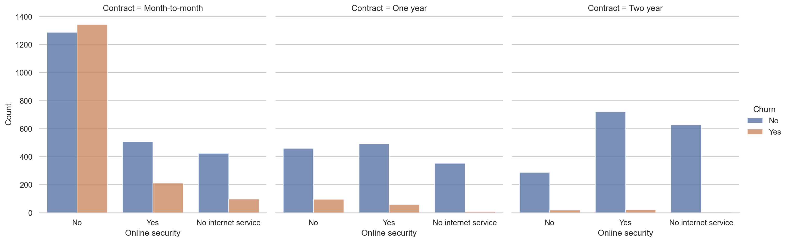
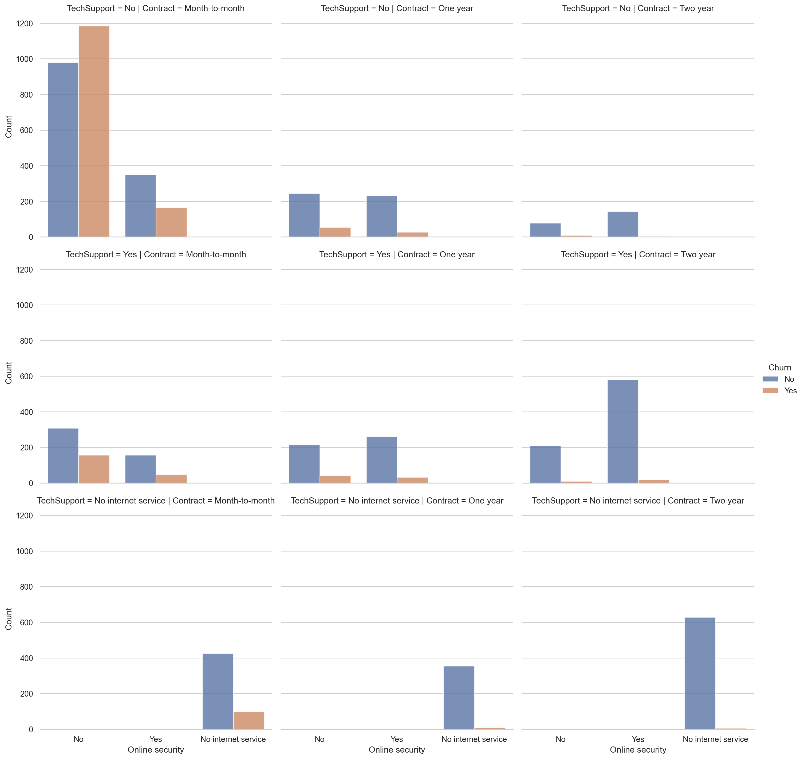
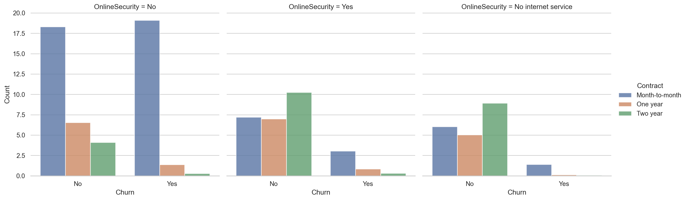

Code
telco = pd.read_csv("kaggle/telco.csv", index_col = "customerID", na_values=" ")sns.boxplot sns.violinplot
https://www.kaggle.com/code/marcinrutecki/telco-churn-eda-model-voting-boosting * Could talk specifically about imbalanced data sets.
https://www.kaggle.com/code/bandiatindra/telecom-churn-prediction
telco = pd.read_csv("kaggle/telco.csv", index_col = "customerID", na_values=" ")telco.info()<class 'pandas.core.frame.DataFrame'>
Index: 7043 entries, 7590-VHVEG to 3186-AJIEK
Data columns (total 20 columns):
# Column Non-Null Count Dtype
--- ------ -------------- -----
0 gender 7043 non-null object
1 SeniorCitizen 7043 non-null int64
2 Partner 7043 non-null object
3 Dependents 7043 non-null object
4 tenure 7043 non-null int64
5 PhoneService 7043 non-null object
6 MultipleLines 7043 non-null object
7 InternetService 7043 non-null object
8 OnlineSecurity 7043 non-null object
9 OnlineBackup 7043 non-null object
10 DeviceProtection 7043 non-null object
11 TechSupport 7043 non-null object
12 StreamingTV 7043 non-null object
13 StreamingMovies 7043 non-null object
14 Contract 7043 non-null object
15 PaperlessBilling 7043 non-null object
16 PaymentMethod 7043 non-null object
17 MonthlyCharges 7043 non-null float64
18 TotalCharges 7032 non-null float64
19 Churn 7043 non-null object
dtypes: float64(2), int64(2), object(16)
memory usage: 1.1+ MBsns.boxplot(telco, x="MonthlyCharges", hue="Churn")
There is no standard way to
pd.crosstab(telco["Churn"], telco["gender"], normalize = True).style.format(precision=2)| gender | Female | Male |
|---|---|---|
| Churn | ||
| No | 0.36 | 0.37 |
| Yes | 0.13 | 0.13 |
g = sns.catplot(telco, x="Churn", hue="gender", alpha=.8, kind="count")
g.despine(left=True)
g.set_axis_labels("Churn", "Count")
g.legend.set_title("Gender")
import seaborn as sns
sns.set_theme(style="whitegrid")
penguins = sns.load_dataset("penguins")
# Draw a nested barplot by species and sex
g = sns.catplot(
data=penguins, kind="bar",
x="species", y="body_mass_g", hue="sex",
errorbar="sd", palette="dark", alpha=.6, height=6
)
g.despine(left=True)
g.set_axis_labels("", "Body mass (g)")
g.legend.set_title("")
from sklearn.feature_selection import mutual_info_classif
from scipy.stats import entropy
telco.dropna(inplace=True)
X = telco.copy()
y = X.pop("Churn")
# Label encoding for categoricals
for colname in X.select_dtypes("object"):
X[colname], _ = X[colname].factorize()
# All discrete features should now have integer dtypes (double-check this before using MI!)
discrete_features = X.dtypes == "int64"
def make_mi_scores(X, y, discrete_features):
mi_scores = mutual_info_classif(X, y, discrete_features=discrete_features)
mi_scores = pd.Series(mi_scores, name="MI Scores", index=X.columns)
mi_scores = mi_scores.sort_values(ascending=False)
return mi_scores
mi_scores = make_mi_scores(X, y, discrete_features)
#mi_scores[::3] # show a few features with their MI scoresfrom sklearn.feature_selection import mutual_info_classif
from scipy.stats import entropy
(pd.crosstab(telco["Churn"], telco["gender"], normalize = True).style.format(precision=2))| gender | Female | Male |
|---|---|---|
| Churn | ||
| No | 0.36 | 0.37 |
| Yes | 0.13 | 0.13 |
https://medium.com/swlh/a-deep-conceptual-guide-to-mutual-information-a5021031fad0
pd.crosstab(telco["Churn"], telco["tenure"], normalize = True).style.format(precision=2)| tenure | 1 | 2 | 3 | 4 | 5 | 6 | 7 | 8 | 9 | 10 | 11 | 12 | 13 | 14 | 15 | 16 | 17 | 18 | 19 | 20 | 21 | 22 | 23 | 24 | 25 | 26 | 27 | 28 | 29 | 30 | 31 | 32 | 33 | 34 | 35 | 36 | 37 | 38 | 39 | 40 | 41 | 42 | 43 | 44 | 45 | 46 | 47 | 48 | 49 | 50 | 51 | 52 | 53 | 54 | 55 | 56 | 57 | 58 | 59 | 60 | 61 | 62 | 63 | 64 | 65 | 66 | 67 | 68 | 69 | 70 | 71 | 72 |
|---|---|---|---|---|---|---|---|---|---|---|---|---|---|---|---|---|---|---|---|---|---|---|---|---|---|---|---|---|---|---|---|---|---|---|---|---|---|---|---|---|---|---|---|---|---|---|---|---|---|---|---|---|---|---|---|---|---|---|---|---|---|---|---|---|---|---|---|---|---|---|---|---|
| Churn | ||||||||||||||||||||||||||||||||||||||||||||||||||||||||||||||||||||||||
| No | 0.03 | 0.02 | 0.02 | 0.01 | 0.01 | 0.01 | 0.01 | 0.01 | 0.01 | 0.01 | 0.01 | 0.01 | 0.01 | 0.01 | 0.01 | 0.01 | 0.01 | 0.01 | 0.01 | 0.01 | 0.01 | 0.01 | 0.01 | 0.01 | 0.01 | 0.01 | 0.01 | 0.01 | 0.01 | 0.01 | 0.01 | 0.01 | 0.01 | 0.01 | 0.01 | 0.01 | 0.01 | 0.01 | 0.01 | 0.01 | 0.01 | 0.01 | 0.01 | 0.01 | 0.01 | 0.01 | 0.01 | 0.01 | 0.01 | 0.01 | 0.01 | 0.01 | 0.01 | 0.01 | 0.01 | 0.01 | 0.01 | 0.01 | 0.01 | 0.01 | 0.01 | 0.01 | 0.01 | 0.01 | 0.01 | 0.01 | 0.01 | 0.01 | 0.01 | 0.02 | 0.02 | 0.05 |
| Yes | 0.05 | 0.02 | 0.01 | 0.01 | 0.01 | 0.01 | 0.01 | 0.01 | 0.01 | 0.01 | 0.00 | 0.01 | 0.01 | 0.00 | 0.01 | 0.00 | 0.00 | 0.00 | 0.00 | 0.00 | 0.00 | 0.00 | 0.00 | 0.00 | 0.00 | 0.00 | 0.00 | 0.00 | 0.00 | 0.00 | 0.00 | 0.00 | 0.00 | 0.00 | 0.00 | 0.00 | 0.00 | 0.00 | 0.00 | 0.00 | 0.00 | 0.00 | 0.00 | 0.00 | 0.00 | 0.00 | 0.00 | 0.00 | 0.00 | 0.00 | 0.00 | 0.00 | 0.00 | 0.00 | 0.00 | 0.00 | 0.00 | 0.00 | 0.00 | 0.00 | 0.00 | 0.00 | 0.00 | 0.00 | 0.00 | 0.00 | 0.00 | 0.00 | 0.00 | 0.00 | 0.00 | 0.00 |
from sklearn.linear_model import LogisticRegression
from sklearn.metrics import brier_score_loss
from sklearn.metrics import log_loss
telco.dropna(inplace=True)
X = telco.copy()
y = X.pop("Churn")
y.replace({"Yes": 1, "No": 0}, inplace=True)
logit = LogisticRegression(penalty=None)
feature, _ = X["Contract"].factorize()
feature = feature.reshape(-1, 1)
logit.fit(feature, y)C:\Users\jonas\AppData\Local\Temp\ipykernel_13892\4270679474.py:8: FutureWarning: Downcasting behavior in `replace` is deprecated and will be removed in a future version. To retain the old behavior, explicitly call `result.infer_objects(copy=False)`. To opt-in to the future behavior, set `pd.set_option('future.no_silent_downcasting', True)`
y.replace({"Yes": 1, "No": 0}, inplace=True)LogisticRegression(penalty=None)In a Jupyter environment, please rerun this cell to show the HTML representation or trust the notebook.
LogisticRegression(penalty=None)
def allrsq(X, y):
logit = LogisticRegression(penalty=None)
y_, _ = y.factorize()
bottom = log_loss(y_, y_.mean() * np.ones(y_.size))
def rsq(x, y, loss=log_loss):
top = loss(y, logit.predict_proba(x)[:, 1])
return 1 - top / bottom
def massage(x):
if x.dtype == "object":
x_, _ = x.factorize()
else:
x_ = x.to_numpy()
x_ = x_.reshape(-1, 1)
logit.fit(x_, y_)
return rsq(x_, y_)
return pd.Series({name: massage(X[name]) for name in X})
def rsq(x, y, loss=log_loss):
top = loss(y, logit.predict_proba(x)[:, 0])
bottom = loss(y, y.mean() * np.ones(y.size))
return [top, bottom]
telco.dropna(inplace=True)
X = telco.copy()
y = X.pop("Churn")
allrsq(X, y).sort_values(ascending=False).to_frame(name="Prsq").style.format(precision=2)| Prsq | |
|---|---|
| Contract | 0.17 |
| tenure | 0.12 |
| OnlineSecurity | 0.11 |
| TechSupport | 0.11 |
| DeviceProtection | 0.07 |
| PaymentMethod | 0.06 |
| StreamingMovies | 0.04 |
| TotalCharges | 0.04 |
| StreamingTV | 0.04 |
| MonthlyCharges | 0.03 |
| PaperlessBilling | 0.03 |
| Dependents | 0.02 |
| Partner | 0.02 |
| SeniorCitizen | 0.02 |
| OnlineBackup | 0.00 |
| InternetService | 0.00 |
| MultipleLines | 0.00 |
| PhoneService | 0.00 |
| gender | 0.00 |
import statsmodels.formula.api as smf
mod = smf.logit("Churn ~ Contract", data = telco.replace({"Churn": {"Yes":1, "No":0}})).fit()Optimization terminated successfully.
Current function value: 0.480839
Iterations 8C:\Users\jonas\AppData\Local\Temp\ipykernel_13892\1847061750.py:2: FutureWarning: Downcasting behavior in `replace` is deprecated and will be removed in a future version. To retain the old behavior, explicitly call `result.infer_objects(copy=False)`. To opt-in to the future behavior, set `pd.set_option('future.no_silent_downcasting', True)`
mod = smf.logit("Churn ~ Contract", data = telco.replace({"Churn": {"Yes":1, "No":0}})).fit()g = sns.catplot(
telco,
x="OnlineSecurity",
alpha=0.8,
col="Contract",
hue="Churn",
kind="count",
)
g.despine(left=True)
g.set_axis_labels("Online security", "Count")
g.legend.set_title("Churn")
Churn is highest among customers with a month-to-month contract and no online security. This group accounts for
telco.replace({"Churn": {"Yes":1, "No":0}}).groupby(["OnlineSecurity", "Contract", "TechSupport"]).agg({"Churn": ["sum", "count", "mean"]})C:\Users\jonas\AppData\Local\Temp\ipykernel_13892\703581193.py:1: FutureWarning: Downcasting behavior in `replace` is deprecated and will be removed in a future version. To retain the old behavior, explicitly call `result.infer_objects(copy=False)`. To opt-in to the future behavior, set `pd.set_option('future.no_silent_downcasting', True)`
telco.replace({"Churn": {"Yes":1, "No":0}}).groupby(["OnlineSecurity", "Contract", "TechSupport"]).agg({"Churn": ["sum", "count", "mean"]})| Churn | |||||
|---|---|---|---|---|---|
| sum | count | mean | |||
| OnlineSecurity | Contract | TechSupport | |||
| No | Month-to-month | No | 1185 | 2165 | 0.547344 |
| Yes | 158 | 466 | 0.339056 | ||
| One year | No | 55 | 299 | 0.183946 | |
| Yes | 42 | 258 | 0.162791 | ||
| Two year | No | 10 | 89 | 0.112360 | |
| Yes | 11 | 220 | 0.050000 | ||
| No internet service | Month-to-month | No internet service | 99 | 524 | 0.188931 |
| One year | No internet service | 9 | 363 | 0.024793 | |
| Two year | No internet service | 5 | 633 | 0.007899 | |
| Yes | Month-to-month | No | 165 | 515 | 0.320388 |
| Yes | 48 | 205 | 0.234146 | ||
| One year | No | 27 | 258 | 0.104651 | |
| Yes | 33 | 294 | 0.112245 | ||
| Two year | No | 4 | 146 | 0.027397 | |
| Yes | 18 | 597 | 0.030151 | ||
g = sns.catplot(
telco,
x="OnlineSecurity",
alpha=0.8,
col="Contract",
row="TechSupport",
hue="Churn",
kind="count",
)
g.despine(left=True)
g.set_axis_labels("Online security", "Count")
g.legend.set_title("Churn")
g = sns.catplot(telco, x="Churn", hue="Contract", alpha=.8, col="OnlineSecurity",kind="count", stat="percent")
g.despine(left=True)
g.set_axis_labels("Churn", "Count")
g.legend.set_title("Contract")
The standards are Kendall’s tau and Spearman’s rho.